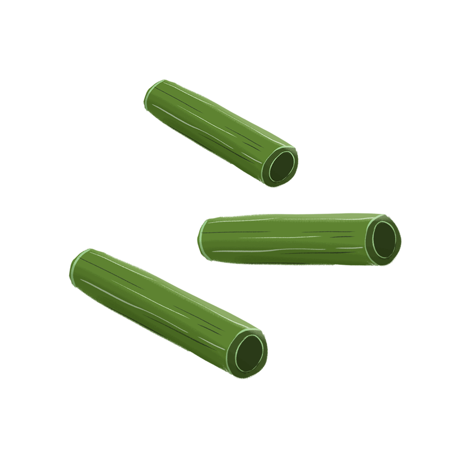

Cây Tre
Trăm Đốt
Cái kết từ câu truyện Cây tre trăm đốt rất đáng để cho mỗi chúng ta học hỏi. Với một cái kết mang đậm tính nhân văn, mọi người hãy luôn nhớ rằng cứ sống thật nhân hậu và chăm chỉ cuối cùng người ở hiền cũng sẽ gặp lành và người tốt sẽ được hưởng hạnh phúc thật xứng đáng. Ngược lại những người ác và những người ủng hộ kẻ ác sẽ không có kết quả tốt đẹp, sẽ bị trừng phạt vì báo ứng sẽ đến trong tương lai. Ghi nhớ bài học này, chúng ta cần rèn luyện theo để có một lối sống đúng đắn.


Bánh Chưng
Bánh Dày
Khi có một vấn đề quá khó khăn thì chúng ta cần suy nghĩ thật kỹ và tìm thông tin ở mọi nơi, không nên như các anh của Lang Liêu sai người tìm vật hiếm mà ko chịu nghĩ suy. Chỉ có những người như Lang Liêu chịu suy nghĩ mới được thần giúp cho. Câu chuyện còn cho ta biết : Chúng ta phải biết trân trọng những hạt gạo trắng mà các người nông dân làm ra. Hằng ngày, họ đã đổ bao nhiêu mồ hôi, nước mắt để làm việc tạo nên những hạt gạo thơm ngon. Cho nên chúng ta phải đề cao lao động của người nông dân và thể hiện tình yêu đất nước, tôn trọng Trời, Đất, Tổ tiên của chúng ta.
Sọ Dừa
Không nên đánh giá một con người chỉ qua vẻ bề ngoài, nên nhận xét họ thông qua hành động, lời nói và cử chỉ trong cuộc sống. Mỗi người có thể là một viên ngọc sáng ẩn sau lớp vỏ xù xì khó gần. Sọ Dừa đề cao, ca ngợi vẻ đẹp bên trong của con người. Từ đó, truyện nêu một bài học kinh nghiệm khi đánh giá con người: phải xem xét toàn diện, không chỉ dừng lại ở biểu hiện bề ngoài. Đó là ý nghĩa nhân bản, thể hiện đạo lý truyền thống của nhân dân. Truyện còn đề cao lòng nhân ái, về quy luật nhân quả của cuộc đời “ở hiền gặp lành”, kẻ “gieo gió ắt gặp bão”. Chính lòng nhân ái sẽ đem lại hạnh phúc cho con người. Truyện đề cao giá trị chân chinh của con người và tình thương đối với người bất hạnh.

Tấm Cám
Đạo lí ở hiền gặp lành, ác giả ác báo. Có những lúc cái thiện có thể bị cái ác lấn lướt nhưng cuối cùng phần thắng vẫn luôn thuộc về cái thiện.
Dân gian muốn khẳng định sức sổng mãnh liệt của con người, của cái thiện; con người không chịu khuất phục, đầu hàng cái ác, cái xấu, sẽ chiến đấu đến cùng để bảo vệ chân lí. Con người cần phải biết giành và giữ hạnh phúc chính đáng cho mình.